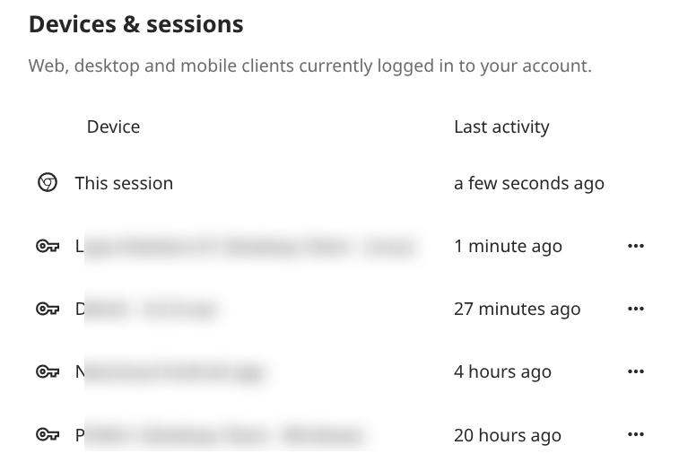
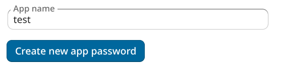

Beheren van gekoppelde browsers en apparaten
De pagina met persoonlijke instellingen geeft je een overzicht van de gekoppelde browsers en apparaten.
Beheer van gekoppelde browsers
In de lijst met gekoppelde browsers ziet je welke browsers recentelijk aan jouw account zijn gekoppeld:

Je kan het prullenbak pictogram gebruiken om de koppeling met een van de browsers in de lijst te verbreken.
Beheer van apparaten
In de lijst met gekoppelde apparaten zie je alle apparaten en clients waarvoor je een apparaat wachtwoord hebt aangemaakt en hun laatste activiteit:

Je kan het prullenbak pictogram gebruiken om een van de apparaten in de lijst los te koppelen.
Onderaan de lijst vind je een knop om een nieuw apparaat specifiek wachtwoord aan te maken. Je kan later een naam kiezen om de token te identificeren. Het gegenereerde wachtwoord wordt gebruikt voor het configureren van de nieuwe cliënt. Idealiter maak je individuele tokens aan voor elk apparaat dat je met jouw account verbindt, zodat je deze indien nodig individueel kan loskoppelen:

Notitie
Je hebt alleen toegang tot het wachtwoord van het apparaat bij het aanmaken ervan. Nextcloud slaat het wachtwoord niet op, vandaar dat het aan te raden is om het wachtwoord direct in te voeren op de nieuwe client.
Notitie
If you use Gebruik maken van twee-factor authenticatie for your account, device-specific passwords are the only way to configure clients. The server will deny connections of clients using your login password then.
Apparaat specifieke wachtwoorden en wachtwoord wijzigingen
Bij wachtwoordwijzigingen in externe gebruiker backends worden de toestel specifieke wachtwoorden als ongeldig gemarkeerd en van zodra een login van het gebruikersaccount met het hoofdwachtwoord plaatsvindt, worden alle toestelspecifieke wachtwoorden bijgewerkt en werken ze weer.